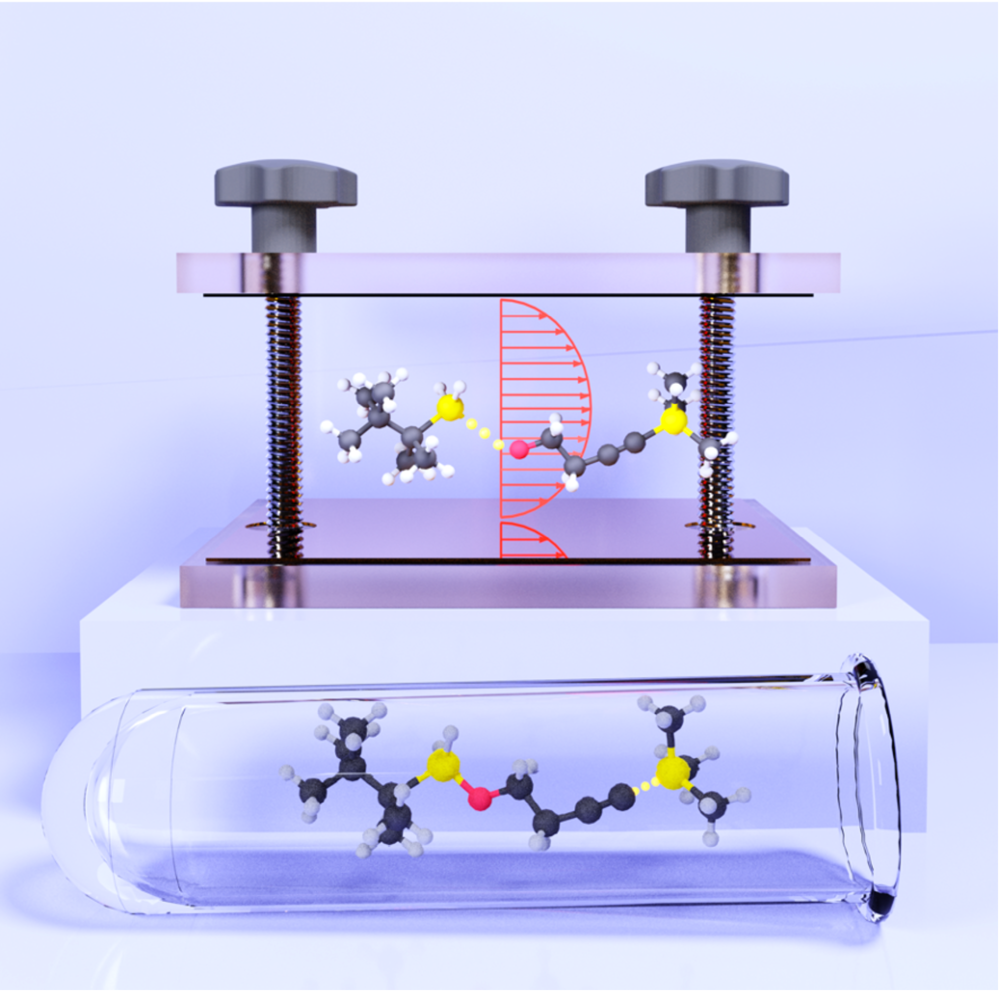
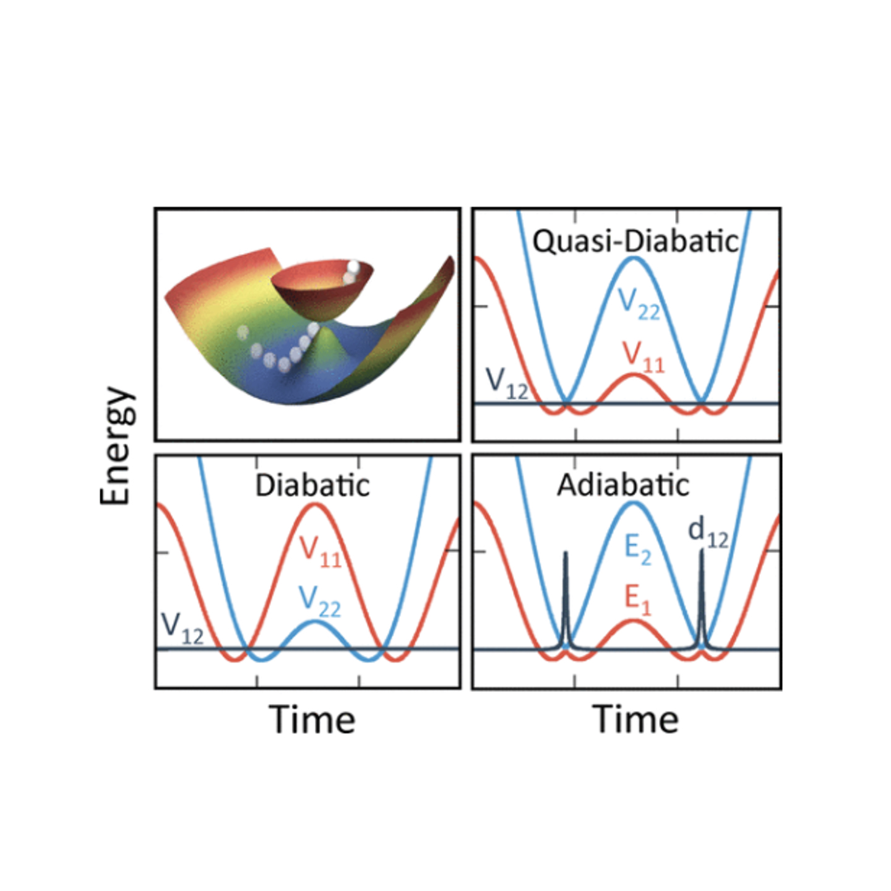

Microscopic Theory of Polariton Group Velocity Renormalization
W. Ying, B. X. K. Chng, P. Huo arXiv (2024)
69
Trajectory-based Non-adiabatic Simulations of the Polariton Relaxation Dynamics
D. Hu, B. X. K. Chng, W. Ying, P. Huo ChemRxiv (2024)
68
Ab Initio Approaches to Simulate Molecular Polaritons: Properties and Quantum Dynamics
B. Weight, P. Huo ChemRxiv (2024)
67
Light-Matter Interaction Hamiltonians in Cavity Quantum Electrodynamics
M. A. D. Taylor, A. Mandal P. Huo ChemRxiv (2024)
66
Investigating Cavity Quantum Electrodynamics-Enabled Endo/Exo- Selectivities in a Diels-Alder Reaction
J. Wang, B. Weight, P. Huo ChemRxiv (2024)
65
Theory of Resonance Suppression in Vibrational Polariton Chemistry
S. M. Vega, W. Ying, P. Huo ChemRxiv (2024)
64
Ab initio Spin-Mapping Non-adiabatic Dynamics Simulations of Photochemistry
B. Weight, A. Mandal, D. Hu, P. Huo ChemRxiv (2024)
63
Quantum Dynamics Simulations of Exciton Polariton Transport
B. X. K. Chng, M. E. Mondal, W. Ying, P. Huo Nano Letters 25, 4, 1617–1622 (2025)
62
Polariton Spectra under the Collective Coupling Regime. II. 2D Non-linear Spectra
M. E. Mondal, A. Vamivakas, S. Cundiff, T. D. Krauss, P. Huo ChemRxiv (2024)
61
Polariton Spectra under the Collective Coupling Regime. I. Efficient Simulation of Linear Spectra and Quantum Dynamics
M. E. Mondal, A. Vamivakas, S. Cundiff, T. D. Krauss, P. Huo J. Chem. Phys. 162, 014114 (2025)
60
Mechanism of Polariton Decoherence in the Collective Light-Matter Couplings Regime
B. X. K. Chng, W. Ying, Y. Lai, A. Vamivakas, S. Cundiff, T.D. Krauss, P. Huo J. Phys. Chem. Lett. 15, 11773-11783 (2024)
59
Spin relaxation dynamics with a continuous spin environment: The dissipaton equation of motion approach
W. Ying, Y. Su, Z. Chen, Y. Wang, P. Huo J. Chem. Phys. 161, 144112 (2024)
58
Non-Equilibrium Rate Theory for Polariton Relaxation Dynamics
Y. Lai, W. Ying, P. Huo J. Chem. Phys. 161, 104109 (2024)
57
Theory and Quantum Dynamics Simulations of Exciton-Polariton Motional Narrowing
W. Ying, M. E. Mondal, P. Huo J. Chem. Phys. 161, 064105 (2024)
56
Cavity Controlled Upconversion in CdSe Nanoplatelet Polaritons
M. Amin, E. R. Koessler, O. Morshed, F. Awan, N. M. B. Cogan, R. Collison, T. M. Tumiel, W. Girten, C. S. Leiter, A. N. Vamivakas, P. Huo, T. D. Krauss ACS Nano (2024)
55
Room-Temperature Strong Coupling between CdSe Nanoplatelets and a Metal–DBR Fabry–Pérot Cavity
O. Morshed, M. Amin, N. M. B. Cogan, E. R. Koessler, R. Collison, T. M. Tumiel, W. Girten, F. Awan, L. Mathis, P. Huo, A. N. Vamivakas, T. W. Odom, T. D. Krauss J. Chem. Phys. 161, 014710 (2024)
54
Resonance Theory of Vibrational Strong Coupling Enhanced Polariton Chemistry and the role of photonic mode lifetime
W. Ying, P. Huo Commun. Mater. 5, 110 (2024)
53
Cavity Quantum Electrodynamics Enables para- and ortho- Bromination of Nitrobenzene
B. M. Weight, D. Weix, Z. Tonzetich, T.D. Krauss, P. Huo J.A.C.S 146, 16184-16193 (2024)
52
Room-Temperature Polariton Lasing from CdSe core-only Nanoplatelets
F. F. Fernandez, N. G. Sinai, M. J. H. Tan, S. M. Park, E. R. Koessler, T. D. Krauss, P. Huo, T. W. Odom ACS Nano 18, 15177-15184 (2024)
51
Reciprocal asymptotically decoupled Hamiltonian for cavity quantum electrodynamics
M. A. D. Taylor, B. M. Weight, P. Huo Phys. Rev. B 109, 104305 (2024)
50
Resonance Theory of Vibrational Polariton Chemistry at the Normal Incidence
W. Ying, M. A. D. Taylor, P. Huo Nanoph. 13, 2601-2615 (2024)
49
Resonance Enhancement of Vibrational Polariton Chemistry Obtained from the Mixed Quantum Classical Dynamics Simulations
D. Hu, W. Ying, P. Huo J. Phys. Chem. Lett. 14, 11208-11216 (2024)
48
Quantum Dynamics Simulations of the 2D Spectroscopy for Exciton Polaritons
M. E. Mondal, E. Koessler, J. Provazza, A. Vamivakas, S. Cundiff, T. D. Krauss, P. Huo J. Chem. Phys. 159, 094102 (2023)
47
Resonance Theory and Quantum Dynamics Simulations of Vibrational Polariton Chemistry
W. Ying, P. Huo J. Chem. Phys. 159, 084104 (2023)
46

Theoretical Advances in Polariton Chemistry and Molecular Cavity Quantum Electrodynamics
A. Mandal, M. A. D. Taylor, B. M. Weight, E. R. Koessler, X. Li, P. Huo Chem. Rev. 123, 9786-9879 (2023)
45
A Theory for Cavity Modified Ground-State Reactivities via Electron-Photon Interactions
A. Mandal, M. A. D. Taylor, P. Huo J. Phys. Chem. A 127, 6830-6841 (2023)
44
Investigating Molecular Exciton-Polaritons using Ab Initio Cavity Quantum Electrodynamics
B. M. Weight, T.D. Krauss, P. Huo J. Phys. Chem. Lett. 25, 5901-5913 (2023)
43
Ab Initio Molecular Cavity Quantum Electrodynamics Simulations Using Machine Learning Models
D. Hu, P. Huo J. Chem. Theory Comput. 8, 2353-2368 (2023)
42
"Non-adiabatic Ring Polymer Molecular dynamics in the Phase Space of the SU(N) Lie Group"
D.L. Bossion, S.N. Chowdhury, P. Huo J. Chem. Phys. 158, 044123 (2023)
41
"Quasi-Diabatic Propagation Scheme for Simulating Polariton Chemistry"
D. Hu, A. Mandal, B. M. Weight, P. Huo J. Chem. Phys. 157, 194109 (2022)
40
"Nuclear Gradient expressions for Molecular Cavity Quantum Electrodynamics Simulations using Mixed Quantum-Classical Methods"
W. Zhou, D. Hu, A. Mandal, P. Huo J. Chem. Phys.157, 104118 (2022)
39
"Non-Adiabatic Mapping Dynamics in the phase space of SU(N) Lie group"
D.L. Bossion, W. Ying, S.N. Chowdhury, P. Huo J. Chem. Phys. 157, 084105 (2022)
38
"Incorporating Lindblad decay dynamics into mixed quantum-classical simulations"
E. R. Koessler, A. Mandal, P. Huo J. Chem. Phys. 157, 064101 (2022)
37
"Resolving ambiguities of the mode truncation in cavity quantum electrodynamics"
M. A. D. Taylor, A. Mandal, P. Huo Optics Lett. 47, 1446 (2022)
36
"Theory of Vibrational Polariton Chemistry in the Collective Coupling Regime"
A. Mandal, X. Li, P. Huo J. Chem. Phys. 156, 014101 (2022)
35
"Ab-initio Symmetric Quasi-Classical Approach to Investigate Molecular Tully Models"
B Weight, A Mandal, P Huo J. Chem. Phys. 155, 084106 (2021)
34
"Polariton Induced Conical Intersection and Berry Phase"
M. H. Farag, A. Mandal and P. Huo Phys. Chem. Chem. Phys. 23, 16868 (2021)
33
"Theory of Mode-Selective Chemistry through Polaritonic Vibrational Strong Coupling"
X Li, A Mandal, P Huo J. Phys. Chem. Lett. 12, 6974 (2021)
32
"Investigating Tunneling Controlled Chemical Reactions Through Ab-Initio Ring Polymer Molecular Dynamics"
X Li, P Huo J. Phys. Chem. Lett. 12, 6714 (2021)
31
"Non-Adiabatic Ring Polymer Molecular Dynamics with Spin Mapping Variables"
D. Bossion, S. Chowdhury and P. Huo J. Chem. Phys. 154, 184106(2021)
30
"Molecular Polaritons Generated from Strong Coupling between CdSe Nanoplatelets and a Dielectric Optical Cavity"
L. Qiu, A. Mandal, O. Morshed, M. T. Meidenbauer, W. Girten, P. Huo, A. N. Vamivakas and T. D. Krauss J. Phys. Chem. Lett. 12, 5030 (2021)
29
"Non-adiabatic Matsubara Dynamics and Non-adiabatic Ring Polymer Molecular Dynamics"
S. Chowdhury and P. Huo J. Chem. Phys. 154, 124124(2021)
28
"Cavity Frequency-Dependent Theory for Vibrational Polariton Chemistry"
X. Li, A. Mandal, and P. Huo Nature Commun. 12, 1315 (2021)
27
“Ring-Polymer Quantization of Photon Field in Polariton Chemistry"
S. Chowdhury, A. Mandal, and P. Huo J. Chem. Phys 154, 044109 (2021)
26
“Direct Non-adiabatic Simulations of the Photoinduced Charge Transfer Dynamics"
S. Yamijala and P. Huo J. Phys. Chem. A 125, 628 (2021)
25
“Polarized Fock States and the Dynamical Casimir Effect in Molecular Cavity Quantum Electrodynamics"
A. Mandal, S. M. Vega and P. Huo J. Phys. Chem. Lett. 11, 9215 (2020)
24
“Resolution of Gauge Ambiguities in Molecular Cavity Quantum Electrodynamics"
M. A. D. Taylor, A. Mandal, W. Zhou, P. Huo Phys. Rev. Lett. 125, 123602 (2020)
23
“Polariton Mediated Electron Transfer via Cavity Quantum Electrodynamics"
A. Mandal, T. D. Krauss and P. Huo J. Phys. Chem. B 124, 6321 (2020)
22
“Quasi-Diabatic Scheme for Non-adiabatic On-the-fly Simulations"
W. Zhou, A. Mandal and P. Huo J. Phys. Chem. Lett. 10, 7062 (2019)
21
“Investigating New Reactivities Enabled by Polariton Photochemistry"
A. Mandal and P. Huo J. Phys. Chem. Lett. 10, 5519 (2019)
20
“State Dependent Ring Polymer Molecular Dynamics for Investigating Excited Nonadiabatic Dynamics"
S. Chowdhury and P. Huo J. Chem. Phys. 150, 244102 (2019)
19
“Quasi Diabatic Propagation Scheme for Direct Simulation of Proton-Coupled Electron Transfer Reaction"
Published as part of The Journal of Physical Chemistry virtual special issue “Young Scientists”
A. Mandal, J. S. Sandoval, F. A. Shakib and P. Huo J. Phys. Chem. A 123, 2470 (2019)
18
"Symmetric Quasi Classical Dynamics with Quasi Diabatic Propagation Scheme"
J. S. Sandoval, A. Mandal and P. Huo J. Chem. Phys. 149, 044115 (2018)
17
"Investigating Photoinduced Proton Coupled Electron Transfer Reaction using Quasi Diabatic Dynamics Propagation”
A. Mandal, F. A. Shakib and P. Huo J. Chem. Phys. 148, 244102 (2018)
16

"Quasi Diabatic Representation for Nonadiabatic Dynamics Propagation”
A. Mandal, S. Yamijala and P. Huo J. Chem. Theory Comput. 14, 1828 (2018)
15
"Coherent State Mapping Ring-Polymer Molecular Dynamics for Non-Adiabatic quantum propagations”
S. Chowdhury and P. Huo, J. Chem. Phys. 147, 214109 (2017)
F. A. Shakib and P. Huo, J. Phys. Chem. Lett. 8, 3073 (2017)
13
"Enhancing Singlet-Fission Dynamics by Suppressing Destructive Interference between Charge-Transfer Pathways”
M. Castellanos and P. Huo, J. Phys. Chem. Lett. 8, 2480 (2017)
12
"Breaking the correlation between energy costs and kinetic barriers in hydrogen evolution via a cobalt (pyridine-diimine-dioxime) catalyst”
P. Huo, C. Uyeda, J. D. Goodpaster, J. C. Peters, and T. F. Miller, ACS Catal. 6, 6114 (2016)
11
"Semi-classical path integral dynamics: Photosynthetic energy transfer with realistic environment interactions”
M. Lee, P. Huo and D.F. Coker Ann. Rev. Phys. Chem. 67, 639 (2016)
10
“Electronic coherence and the kinetics of inter-complex energy transfer in light-harvesting systems”
(themed issue on Measurement and prediction of quantum coherence effects in biological processes)
P. Huo and T.F. Miller, Phys. Chem. Chem. Phys. 17, 30914 (2015)
9
"Communication: Predictive partial linearized path integral simulation of condensed phase electron transfer dynamics"
P. Huo, T.F. Miller and D.F. Coker, J. Chem. Phys. 139, 151103 (2013)
8
“Consistent schemes for non-adiabatic dynamics derived from partial linearized density matrix propagation”
(Special Issue on Non-adiabatic dynamics inspired by John Tully)
P. Huo and D.F. Coker, J. Chem. Phys. 137, 22A535 (2012)
7
“Semi-classical path integral non-adiabatic dynamics: a partial linearized classical mapping Hamiltonian approach”
(William H. Miller Festschrift)
P. Huo and D.F. Coker, Mol. Phys. 110, 1035 (2012)
6
“Influence of environment induced correlated fluctuations in electronic coupling on coherent excitation energy transfer dynamics in model photosynthetic systems”,
P. Huo and D.F. Coker, J. Chem. Phys. 136, 115102 (2012)
5
“Communication: Partial linearized density matrix dynamics for dissipative, non- adiabatic quantum evolution”
P. Huo and D.F. Coker J. Chem. Phys. 135, 201101 (2011)
4
“Efficient energy transfer in light-harvesting systems, III: The influence of the eighth bacteriochlorophyll on the dynamics and efficiency in FMO”
J. Moix, J. Wu, P. Huo, D.F. Coker and J.Cao J. Phys. Chem. Lett. 2, 3045 (2011)
3
“Theoretical Study of Coherent Exciton Transfer in Cryptophyte Phycocyanin 645 at Physiological Temperature”
P. Huo and D.F. Coker J. Phys. Chem. Lett. 2, 825 (2011)
2
“Iterative linearized density matrix propagation for modeling coherent excitation energy transfer in photosynthetic light harvesting”
P. Huo and D.F. Coker J. Chem. Phys. 133, 184108 (2010)
1
“Linearized approximations for condensed phase non-adiabatic dynamics: Multi-layered baths and Brownian dynamics implementation”
(Eli Pollak Festschrift)
P. Huo, S. Bonella, L. Chen and D. F. Coker, Chem. Phys. 370, 87 (2010)